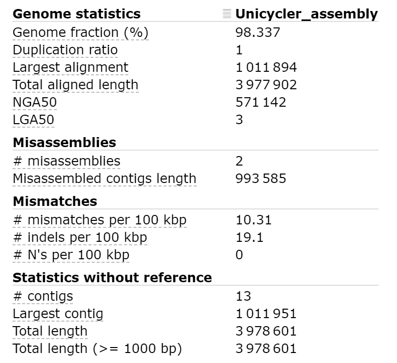
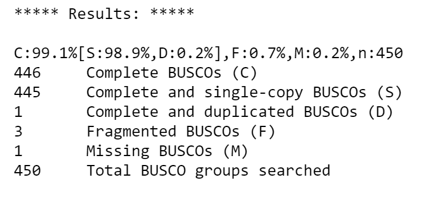

Hybrid genome assembly - nanopore and illumina
Anticipated workshop duration when delivered to a group of participants is 2 hours.
For queries relating to this workshop, contact Melbourne Bioinformatics (bioinformatics-training@unimelb.edu.au).
Overview
Topic
- [x] Genomics
- [ ] Transcriptomics
- [ ] Proteomics
- [ ] Metabolomics
- [ ] Statistics and visualisation
- [ ] Structural Modelling
- [x] Basic skills
Skill level
- [x] Beginner
- [ ] Intermediate
- [ ] Advanced
This workshop is designed for participants with no command line knowledge. A web-based platform called Galaxy will be used to run our analysis.
Description
Assemble a genome!
Learn how to create and assess the quality of high-quality genome assemblies using the powerful combination of nanopore and illumina reads
This tutorial explores how long and short read data can be combined to produce a high-quality 'finished' bacterial genome sequence. We will use read data produced from two different sequencing platforms, Illumina (short read) and Nanopore (long read) to reconstruct the bacterial genome sequence, hence the term 'hybrid assembly'. Differences in genetic content between bacterial isolates means that it not possible to use the reference based assembly methods used for human genomics (read mapping methods); the reference-free approach is termed 'de novo assembly'.
Using short read data (Illumina) alone for de novo assembly will produce a complete genome, but in pieces (commonly called a 'draft genome'). For the genome to be assembled into a single chromosome (plus a sequence for each plasmid), reads would need to be longer than the longest repeated element on the genome (usually ~7,000 base pairs, Note: Illumina reads are 350 base maximum).
Draft bacterial genome sequences are cheap to produce (less than AUD$60) and useful (>300,000 draft Salmonella enterica genome sequences published at NCBI https://www.ncbi.nlm.nih.gov/pathogens/organisms/), but sometimes you need a high-quality 'finished' bacterial genome sequence e.g. comparative genomics (there are <1,000 are 'finished' or 'closed' Salmonella enterica genome sequences).
Nanopore long reads (commonly >40,000 bases and upto 1,000,000 bases) easily span the longest repeated elements and de novo assembly will result in a single contig for each replicon (chromosome and plasmids), but the nanopore reads have more errors (systematic errors - often homopolymer sequence errors) than occur in Illumina reads (Illumina errors are usually random).
Combining read data from the long and short read sequencing platforms allows the production of a complete genome sequence with very few sequence errors, but the cost of the read data is about AUD$ 1,000 to produce the sequence. Understanably, we usually produce a draft genome sequence with very few sequence errors using the Illumina sequencing platform.
Nanopore sequencing technology is rapidly improving, expect the cost difference to reduce!!
Data: Nanopore reads, Illlumina reads, bacterial organism (Bacillus subtilis) reference genome
Tools: Flye, Pilon, Unicycler, Quast, BUSCO
Pipeline: Hybrid de novo genome assembly - Nanopore draft Illumina polishing
Pipeline: Hybrid de novo genome assembly - Unicycler
Learning Objectives
At the end of this introductory workshop, you will :
- Understand how Nanopore and Illumina reads can be used together to produce a high quality assembly
- Be familiar with genome assembly and polishing programs
- Learn how to assess the quality of a genome assembly, regardless of whether a reference genome is present or absent
- Be able to assemble an unknown, previously undocumented genome to high-quality using Nanopore and Illumina reads!
Requirements and preparation
Attendees are required to bring their own laptop computers.
All data and tools are available on usegalaxy.org.au. You will need a computer to connect to and use their platform. Before the tutorial, navigate to https://usegalaxy.org.au/ and use your email to create an account. Click "Login or register" in the top navigation bar of galaxy to do this.
Preparing your laptop prior to starting this workshop
- No additional software needs to be installed for this workshop.
Required Data
- No additional data needs to be downloaded for this workshop.
Author Information
Written by: Grace Hall
Melbourne Bioinformatics, The University of Melbourne
Created/Reviewed: September 2020
Background
How do we produce the genomic DNA for a bacterial isolate?
Traditional in vitro culture techniques are important. Take a sample (e.g. a swab specimen from an infected sore) and streak a 'loopful' on to solid growth medium that suppoprts the growth of the bacterial pathogen. Technology from the time of Louis Pasteur!
Mixtures of bacterial types can be sequenced e.g. prepare genomic DNA from environmental samples containing bacteria - water, soil, faecal samples etc. (Whole Metagenome Sequencing)

One colony contains 107 – 108 cells. The genomic DNA extracted from one colony is enough for Illumina sequencing. Larger amounts of genomic DNA are required for Nanopore sequencing.
Shotgun sequencing - Illumina Sequencing Library
Genomic DNA is prepared for sequencing by fragmenting/shearing: multiple copies of Chromosome + plasmid --> ~500 bp fragments
Note: Nanopore sequencing - there is usually no need to shear the genomic DNA specialist methods are used to minimise shearing during DNA preparation. For Nanopore sequencing the longer the DNA fragments the better!
The read data
Nanopore & Illumina: fastq format
Section 1: Nanopore draft assembly, Illumina polishing
In this section you will use Flye to create a draft genome assembly from Nanopore reads.
We will perform assembly, then assess the quality of our assembly using two tools: Quast, and BUSCO.

Getting the data
- Make sure you have an instance of Galaxy ready to go.
- Navigate to the Galaxy Australia server and sign in if you have an account.
- Copy an existing history
- The data you will need is available in an existing Galaxy history. You can create a copy of this history by clicking here and using the import history '+' icon at the top right of the page.

- The data you will need is available in an existing Galaxy history. You can create a copy of this history by clicking here and using the import history '+' icon at the top right of the page.
- Look at the history you imported
- There are 4 files - Nanopore reads, a set of paired-end Illumina reads, and a reference genome for the organism we will assemble.
- Will we use this reference genome to assess the quality of our assemblies and judge which methods work best.
Draft assembly with Flye + Nanopore reads
We can use Flye to create an assembly from Nanopore reads.
- Making sure you are on the 'Analyse Data' tab of Galaxy, look for the tool search bar at the top of the left panel.
- Search for 'Flye' and select the tool
- We need to provide some information to Flye. Set the 'Input reads' parameter to nanopore_reads.fastq and 'estimated genome size' to 4m. Leave all else defualt.
- Run Flye by clicking 'execute' at the bottom of the page.
- Flye produces a number of outputs. We only need the 'consensus' fasta file. You can delete the other outputs.
- For clarity, the consensus draft assembly can be renamed to something which makes sense, like 'nanopore draft assembly'
Assessing draft assembly quality
Quast
We need to check if our assembly is good quality or not. It is paramount that genome assemblies are high-quality for them to be useful. The supplied reference genome allows a direct comparison. We can use a tool call 'Quast' to compare our assembly to the reference genome.
- Search for the Quast tool in the tools panel.
- Parameters:
- Contigs/scaffolds file = the nanopore draft assembly you just created
- Use a reference genome? = Yes
- Reference genome = reference_genome.fasta
- All else default
- Execute Quast by clicking 'execute' at the bottom of the page.
- We are mainly interested in one of the outputs - the HTML report
- Open the report. It may look something like this:
 - Note the Genome fraction (%), # mismatches per 100 kbp, # indels per 100 kbp and # contigs information.
We seem to have good coverage and not too many contigs, but our error rate is quite high.
BUSCO
In this case we were able to use a reference genome to assess assembly quality, but this is not always the case. When our sample organism is unknown, we need another method to assess assembly quality. BUSCO analysis is one way to do this.
BUSCO analysis uses the presence, absence, or fragmentation of key genes in an assembly to determine is quality.
BUSCO genes are specifically selected for each taxonomic clade, and represent a group of genes which each organism in the clade is expected to possess. At higher clades, 'housekeeping genes' are the only members, while at more refined taxa such as order or family, lineage-specific genes can also be used.
- Find and select the Busco tool in the tools panel using the search bar.
- We will assess our Nanopore draft assembly created by Flye.
- In this tutorial, we will suspect that our organism is within the 'Bacillales' order.
- Parameters:
- Sequences to analyse = our Nanopore draft assembly
- Lineage = Bacillales
- Leave all else default and execute the program.
After the program has run, look at the 'short summary' output. It may look something like this:

The 'full table' is also useful. It gives a detailed list of the genes we are searching for, and information about whether they would missing, fragmented, or complete in our assembly.
It seems that most expected genes are missing or fragmented in our assembly. It is likely that the frequent errors in our draft assembly are causing this result. We should be able improve our assembly with the Illumina reads available and correct some of these errors.
This process involves two steps. We will first align the Illumina reads to our draft assembly, then supply the mapping information to Pilon which will use this alignment information to error-correct our assembly.
Assembly Polishing with Pilon
Illumina reads have much higher per-base accuracy than Nanopore reads. We will map the Illumina read sets to our draft assembly using a short-read aligner called BWA-MEM, then can give Pilon this alignment file to polish our draft assembly.
Map Illumina reads to draft assembly
- Search for 'Map with BWA-MEM' in the tools panel and select
- Parameters:
- Will you select a reference genome from your history or use a built-in index? - Use a genome from history and build index
- Use the following dataset as the reference sequence - Select your Nanopore draft assembly
- Single or Paired-end reads - Paired
- Select first set of reads - illumina_reads_1.fastq
- Select second set of reads - illumina_reads_2.fastq
- Leave all else default and execute the program.
The output will be a .BAM file (Binary Alignment Map). This is tabular data recording information about how reads were aligned to the draft assembly.
We can now use this output .BAM file as an input to Pilon.
Polish assembly with Pilon
- Search for 'pilon' in the tools panel and select
- Parameters:
- Select a reference genome - Your Nanopore draft assembly
- Input BAM file - The output .BAM file of BWA-MEM alignment
- Variant calling mode - No
- Leave all else default and execute the program.
Pilon gives a single output file - the polished assembly.
Compare draft and polished assemblies
We are now interested to see how much pilon improved our draft assembly.
- Run Quast as before with the new, polished assembly - Make note of # mismatches per 100 kbp and # indels per 100 kbp. How much has our base accuracy improved?
- Run BUSCO as before with the new, polished assembly - Have we identified more expected genes?
All going well, the polished assembly should be much higher quality than our draft.
The per-base accuracy of our assembly contigs should have markedly improved. This is reflected in the lower mismatches and indels per 100kbp reported by Quast, and the higher number of complete BUSCO genes. Our contiguity and coverage (as measured by the genome fraction (%) statistic reported by Quast) may not show the same level of improvement, as the polishing step is mainly aimed at improving per-base contig accuracy.
Our next step is to use a purpose-built hybrid de novo assembly tool, and compare its performance with our sequential draft + polishing approach.
Section 2: Purpose-built hybrid assembly tool - Unicycler
In this section we will use a purpose-built tool called Unicycler to perform hybrid assembly.
Unicycler uses our Nanopore and Illumina read sets together as input, and returns an assembly. Once we have created the assembly, we will assess its quality using Quast and BUSCO and compare with our previous polished assembly. We will also perform BUSCO analysis on the supplied reference genome itself, to record a baseline for our theoretical best BUSCO report.
Hybrid de novo assembly with Unicycler
Unicycler performs assembly in the opposite manner to our approach. Illumina reads are used to create an assembly graph, then Nanopore reads are used to disentangle problems in the graph. The Nanopore reads serve to bridge Illumina contigs, and to reveal how the contigs are arranged sequentially in the genome.
Run Unicycler
- Find Unicycler in the tools panel. It is listed as 'Create assemblies with Unicycler'
- Run Unicycler using the Nanopore and Illumina read sets.
- Parameters:
- Paired or Single end data? - Paired
- Select first set of reads - illumina_reads_1.fastq
- Select second set of reads - illumina_reads_2.fastq
- Select long reads - nanopore_reads.fastq
(if nanopore_reads.fastq does not appear in the dropdown, its datatype needs to be changed - click then pencil icon next to nanopore_reads.fastq in the history panel -> 'Datatypes' tab -> 'New Type' - fastqsanger) - Leave all else default and execute the program.
Unicycler will output two files - a Final Assembly, and a Final Assembly Graph. We are interested in the Final Assembly.
Comparing Unicycler assembly to Nanopore + Illumina polished assembly
BUSCO and Quast can be used again to assess this assembly. As a purpose-built tool, it generally produces much better assemblies than our sequential approach. This is reflected as (Quast) a lower number of contigs, lower mismatches and indels per 100kb, and (BUSCO) greater number of BUSCO genes complete.
It is important to put perspective on the BUSCO analysis results. By running BUSCO on our supplied high-quality reference genome for this organism, we will gather the BUSCO analysis results for a 'theoretically' perfect assembly of the organism. This can provide more confidence in our quality esimates when using BUSCO.
- Run BUSCO on the supplied, high-quality reference genome.
At time of writing, these were the BUSCO results:

It seems that one BUSCO gene has two copies in the reference genome, and one other gene is fragmented.
Copy number variation is not uncommon, and so the duplicated BUSCO may not represent an assembly error.
Similarly, the fragmented BUSCO may be due to the appearence of multiple SNPs rather than sequencing error. Our organism may have experienced some mutation relative to the reference sequence for the BUSCO in question, causing it to appear 'fragmented'.
Conclusion
We have learned two methods for hybrid de novo assembly. The combination of long- and short-read technology is clearly powerful, represented by our ability to create a good assembly with only 25x coverage (100Mb) of Nanopore, and 50x coverage of Illumina reads (200Mb).
To further improve our assembly, extra Nanopore read data may provide most benefit. At 50x coverage (200Mb), we may achieve a single, or few contig assembly with high per-base accuracy.
The development of new purpose-built tools for hybrid de novo assembly like Unicycler have improved the quality of assemblies we can produce. These tools are of great importance and while they already produce great results, they will continue to improve over time.
Additional reading
Links to additional recommended reading and suggestions for related tutorials.
Flye: https://github.com/fenderglass/Flye/blob/flye/docs/USAGE.md#algorithm
Pilon: https://github.com/broadinstitute/pilon/wiki/Methods-of-Operation
Unicycler: https://github.com/rrwick/Unicycler
Quast: https://academic.oup.com/bioinformatics/article/29/8/1072/228832
BUSCO analysis: https://academic.oup.com/bioinformatics/article/31/19/3210/211866